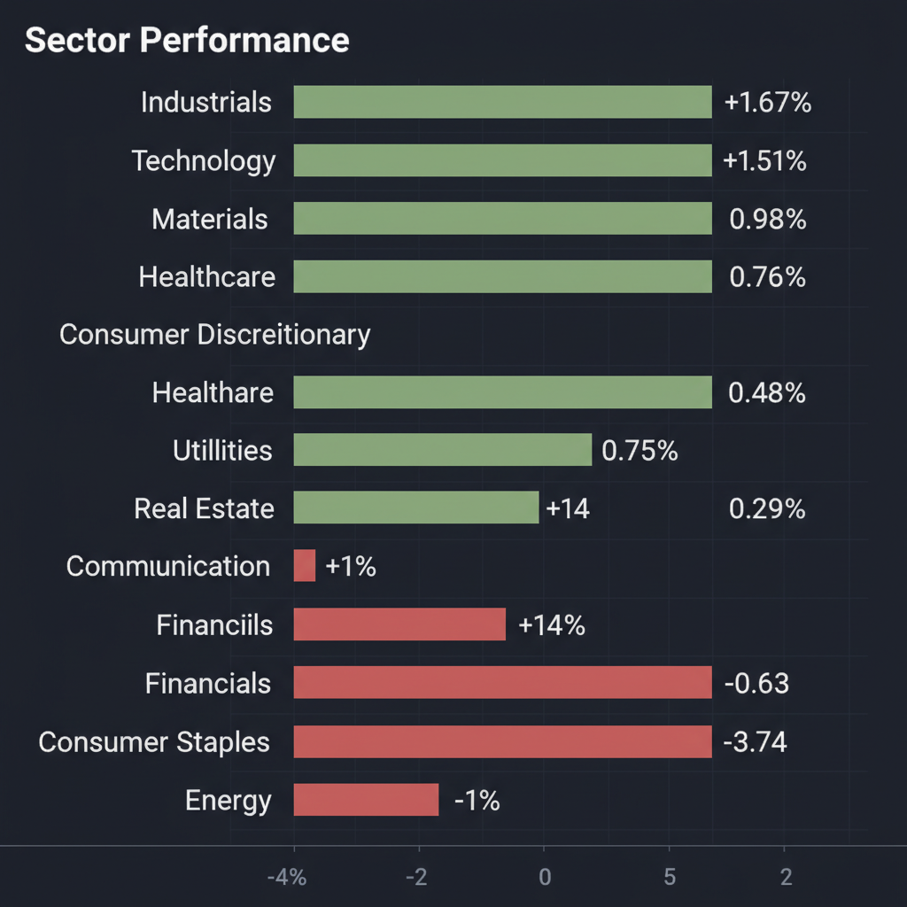
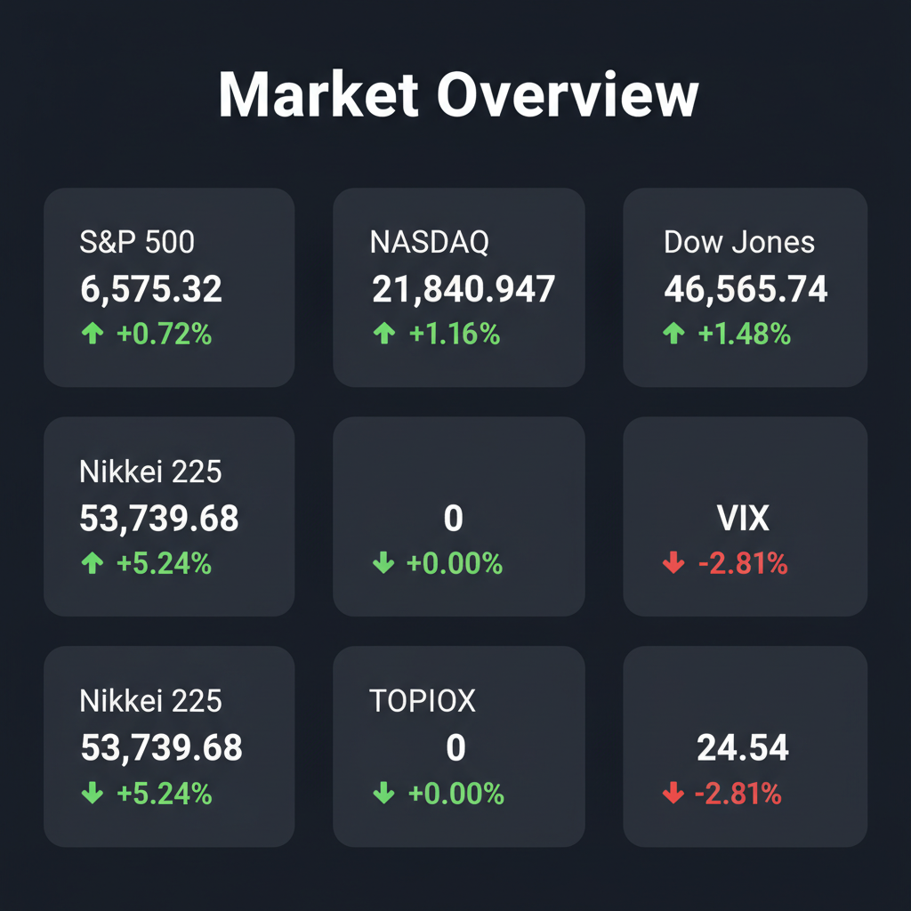

Daily Investment Report - 2026-04-02
Generated: 2026/4/2 8:18:48


投資家向け最終レポート：本日の市場分析と投資戦略
1. エグゼクティブサマリー
- 地政学リスクの緩和観測を背景に日米市場は急反発しましたが、VIXの高止まりや実体経済の悪化が示す「ベアマーケットラリー（偽りの夜明け）」の危険性が潜んでいます。
- 短期的なヘッドラインに踊らされず、現金比率を高めつつ、マクロ環境の逆風を受けにくい「AIインフラ・分散型電源・ヘルスケア」の中小型株へ的を絞るべき局面です。
- 本日はダウンサイドリスクのプロテクトを最優先とし、厳格なストップロス設定とポートフォリオのディフェンシブな再構築を実行してください。
2. 注目銘柄リスト
大型株を避け、次世代の成長テーマを内包する中小型株を中心に選定しています。
強気（買い推奨）
- ペンギン・ソリューションズ（PENG） [時価総額: 中小型]: AIの大量導入フェーズにおいて必須となる、データセンター向け冷却インフラや最適化ソリューションを提供する「ツルハシ銘柄」であり、好決算と割安なバリュエーションが魅力です。
- フイルコン（5904.T） [時価総額: 小型]: 第1四半期の黒字転換という強力なファンダメンタルズの変化と、年初来高値ブレイクアウトというテクニカルの買いシグナルが完全に合致しています。
- Kodiak Gas Services（KGS） [時価総額: 中小型]: 分散型発電インフラ（DPS）の買収により、エネルギー不安とAIの電力爆食問題の両方を解決する自立型電源市場という巨大なメガトレンドに乗っています。
- Pennant Group（PNTG） [時価総額: 中小型]: シニア向け住宅のM&Aを推進しており、人口動態という確実なトレンドを背景に、マクロノイズに左右されない安定した投下資本利益率（ROIC）が期待できます。
中立（様子見）
- 大栄環境（9336.T） [時価総額: 約3,900億円]: 廃棄物処理という最強のディフェンシブ性とM&Aによる成長は優秀ですが、過去3年で株価が3倍に達しており、バリュエーションの妙味が薄いため押し目を待つべきです。
- 霞ヶ関キャピタル（3498.T） [時価総額: 約1,000億円規模]: EC化・コールドチェーンの波に乗る優良中小型株ですが、直近のボラティリティと本日控える決算発表の通過を確認してからのエントリーが安全です。
- インテル（INTC） [時価総額: 大型]: 工場買い戻しで株価は急騰しましたが、AIコスト増大下での巨額の設備投資はフリーキャッシュフローを著しく圧迫する恐れがあり、短期的な窓埋め下落を警戒します。
弱気（警戒）
- 中小型ゼネコン銘柄全般 [時価総額: 中小型]: 2026年の建設費が最大5%上振れするという資材高騰の直撃を受け、価格転嫁力に乏しい企業の粗利率急低下リスクが極めて高い状態です。
- 地銀および中堅金融銘柄 [時価総額: 中小型]: 金利高止まりと景気減速により、シャドーバンキング領域（プライベートクレジット市場）の不良債権化リスクが高まっており、典型的なバリュートラップです。
- ナイキ（NKE） [時価総額: 大型]: 米国の消費減速とインフレ後遺症を象徴する銘柄であり、テクニカル的にもサポートラインを割り込む「落ちてくるナイフ」状態です。
3. セクター推奨ランキング
- 1位 ヘルスケアセクター: 景気減速リスクや地政学リスクから独立したディフェンシブ性を持ち、肥満治療薬などのメガトレンドによる構造的成長が期待できるため、ポートフォリオのコアに最適です。
- 2位 資本財・インフラセクター: AI向けの特殊な冷却設備や、地政学リスクに備えた分散型電源・サプライチェーンの自国回帰など、実需を伴う次世代の設備投資サイクルから直接的な恩恵を受けます。
- 3位 生活必需品・ディスカウント小売セクター: インフレ下でも年会費を引き上げられる会員制量販店のように、強力な価格支配力と生活防衛ニーズを取り込める企業群は不況期に強さを発揮します。
- 4位 一般消費財（裁量消費）セクター: 高金利とインフレによる中間層の購買力低下が顕在化しており、アパレルなどを中心に利益率の圧迫が続くためアンダーウェイト（弱気）を推奨します。
- 5位 金融・銀行セクター: プライベートクレジット市場の時限爆弾とAI導入の莫大なコストが重石となっており、表面的な割安さに騙されてはいけません。
- 6位 エネルギーセクター: 停戦観測の進展により地政学プレミアムが剥落するだけでなく、世界的な景気減速による需要破壊が原油価格の下押し圧力となるため、最も回避すべきセクターです。
4. 今週の注目イベント
- 4月2日: 霞ヶ関キャピタル、クスリのアオキ、西松屋チェーンなどの決算発表（日本市場での内需・小売企業の価格支配力と業績見通しの確認）
- 随時: 米イラン停戦交渉、およびホルムズ海峡開放に関する国連決議・外交協議のヘッドライン動向
- 随時: VIX指数（恐怖指数）の推移（現在24.54の高水準であり、ボラティリティの急拡大に警戒）
5. リスク要因
- インフレ第2波のテールリスク: 停戦交渉が決裂しホルムズ海峡が封鎖された場合、原油価格が再急騰して利下げシナリオが完全崩壊するリスク。
- プライベートクレジット市場の崩壊: 高金利環境の遅行効果により、規制の緩いシャドーバンキング領域で連続デフォルトが発生し、金融システム全体の危機へ発展するリスク。
- 円高反転と日本株のフラッシュ・クラッシュ: 日経平均の急騰は短期マネーのショートカバーに過ぎず、日米金利差の縮小観測に伴う急激な円高が進行すれば、輸出企業を中心に猛烈な利益確定売りが巻き起こるリスク。
- インフラ投資の地政学リスク再評価: データセンター等の物理的インフラが直接攻撃の対象となるニューノーマル時代に入り、関連企業のカントリーリスクや割引率が再評価されるリスク。
6. アクションアイテム
- 異常なボラティリティとベアマーケットラリーに備え、全体的なポジションサイズを通常の半分以下に落とし、現金（キャッシュ）比率を大幅に引き上げる。
- 「ナイキ」のような消費減速の直撃を受ける一般消費財や、不良債権リスクを抱える「銀行セクター」、資材高に苦しむ「日本の中小型ゼネコン」から直ちに資金を引き揚げる。
- 抽出した資金の一部を、マクロノイズに左右されず独自成長が可能な「AIインフラ関連（PENG等）」「分散型電源（KGS等）」、または「ヘルスケアセクター」へ選別して再配分する。
- 予期せぬヘッドラインによる暴落（テールリスク）を防ぐため、すべての保有銘柄に対して直近のサポートライン、または急騰前日の終値を基準とした厳格なストップロス（損切り）注文を本日中に設定する。